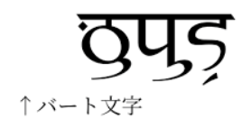

PMCFショーケースに貼られている画像

を解読した。

これを見ると、デーヴァナーガリーのような「ダイアクリティカルマークで母音を表す」ではなく、母音がそれ自体で独立した字として使われていることが分かる。
これについて確認したところ、
2. ショーケースに貼ってあった画像だと、a以外の母音は（デーヴァナーガリーのようなダイアクリティカルマークでなく）独立した文字として書かれているが、それで正しい？
— .sozysozbot.@hsjoihs@jekto.vatimeliju (@sosoBOTpi) 2017年11月24日
そうなっているならそうかもしれない。
— Fafs/தமிழ் மாணவன் (@sashimiwiki) 2017年11月24日
了解。なら、↓の案件が消滅して楽になるなぁhttps://t.co/zly3mh20za
— .sozysozbot.@hsjoihs@jekto.vatimeliju (@sosoBOTpi) 2017年11月24日
アルファベットだったのか。
— Fafs/தமிழ் மாணவன் (@sashimiwiki) 2017年11月24日
aは書かないので一応アブギダさはあるが、確かにアルファベットに近い体系になりそう
— .sozysozbot.@hsjoihs@jekto.vatimeliju (@sosoBOTpi) 2017年11月24日
ということになった。
一方、S.Yの機関誌では
という風に、ダイアクリティカルマークで書いている。
ということで、ダイアクリティカルマークで書くのを「伝統表記」、独立して表記するのを「現代表記」とすることにしてみよう。そうすればOSで実装するのも楽だし。